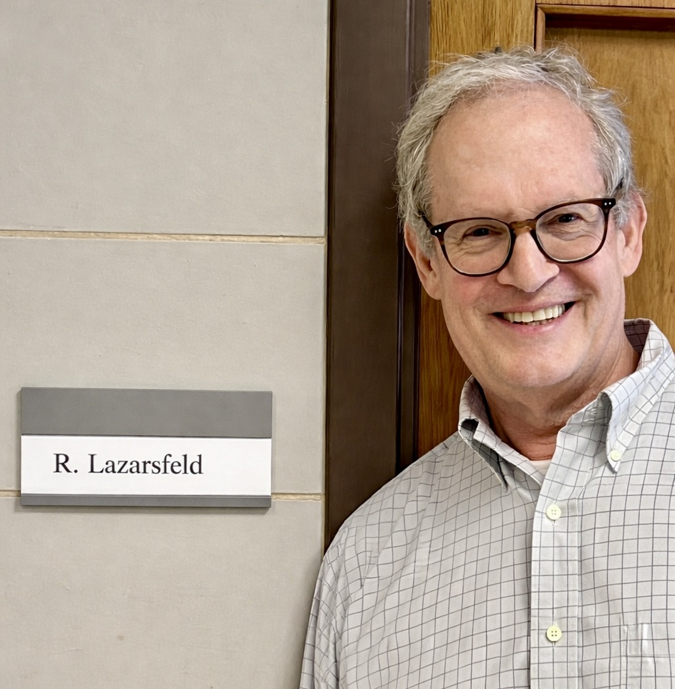

October 28-30, 2026
ROB-AG
Conference
Date
Location
Stony Brook University and the Simons Center for Geometry and Physics
Date
Location
Stony Brook University and the Simons Center for Geometry and Physics

About
Welcome to ROB-AG, a conference on Recent Outcomes in Birational and complex Algebraic Geometry!
This conference is motivated by the extraordinary progress made in the past few decades in our understanding of Hodge theory, singularities, syzygies, and rationality/irrationality, areas of algebraic geometry that have been influenced by the work of Rob Lazarsfeld.
Information
Please see the schedule of talks below.
The deadline to register and receive funding has passed.
Schedule
Wednesday, October 28:
- 11:00-12:00 Mihnea Popa (Harvard University)
- Lunch
- 2:30-3:30 Aaron Bertram (University of Utah)
- 3:30-4:00 Coffee Break
- 4:00-5:00 Lawrence Ein (University of Illinois at Chicago)
- 6:00 Banquet
Thursday, October 29:
- 9:30-10:30 Olivier Martin (IMPA)
- 10:30-11:00 Coffee Break
- 11:00-12:00 Mircea Mustaţă (University of Michigan)
- Lunch
- 1:15-2:15 Daniel Erman (University of Hawai'i)
- 2:30-3:30 Ron Donagi (University of Pennsylvania)
- Celebrating John Pardon (link)*
- 3:30 Presentation of Scholarship
- 5:00 A Celebration of Excellence
- 6:00 Reception
Friday, October 30:
- 9:30-10:30 Giulia Saccà (Columbia University)
- 10:30-11:00 Coffee Break
- 11:00-12:00 Christopher Hacon (University of Utah)
Abstracts
Lawrence Ein
- Title: Syzygies of the secant varieties of curves
- Abstract: We'll discuss the singularities and syzygies of the secant varieties of algebraic curves, which are embedded into by a complete linear system of high degree
More talks will be added soon.
Organizing Committee
Nathan Chen (IMPA)
Sam Grushevsky (Stony Brook)
Radu Laza (Stony Brook)
Mircea Mustaţă (University of Michigan)
Mihnea Popa (Harvard)
Christian Schnell (Stony Brook)
Sam Grushevsky (Stony Brook)
Radu Laza (Stony Brook)
Mircea Mustaţă (University of Michigan)
Mihnea Popa (Harvard)
Christian Schnell (Stony Brook)